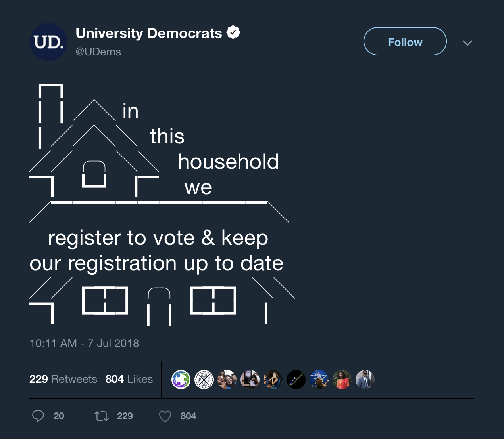
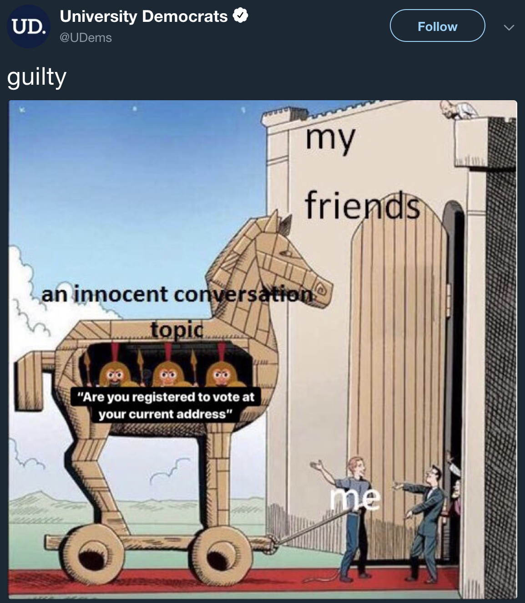

social media.

Account: @UDems. Notable Retweets: @TheDemocrats. Stats: 229 RTs, 804 likes, 20 replies.
Account: @UDems. Stats: 161 RTs, 500 likes, 19 replies.
Account: @UDems. Stats: 70 RTs, 233 likes.

Account: @UDems. Notable Reweets: @TexasDemocrats. Stats: 38 RTs, 127 likes.
Previous
Next
Account: @UDems. Notable Retweets: @TheDemocrats. Stats: 229 RTs, 804 likes, 20 replies.
Account: @UDems. Stats: 161 RTs, 500 likes, 19 replies.
Account: @UDems. Stats: 70 RTs, 233 likes.
Account: @UDems. Notable Reweets: @TexasDemocrats. Stats: 38 RTs, 127 likes.
home
social media
graphics
web
contact
home
social media
graphics
web
contact